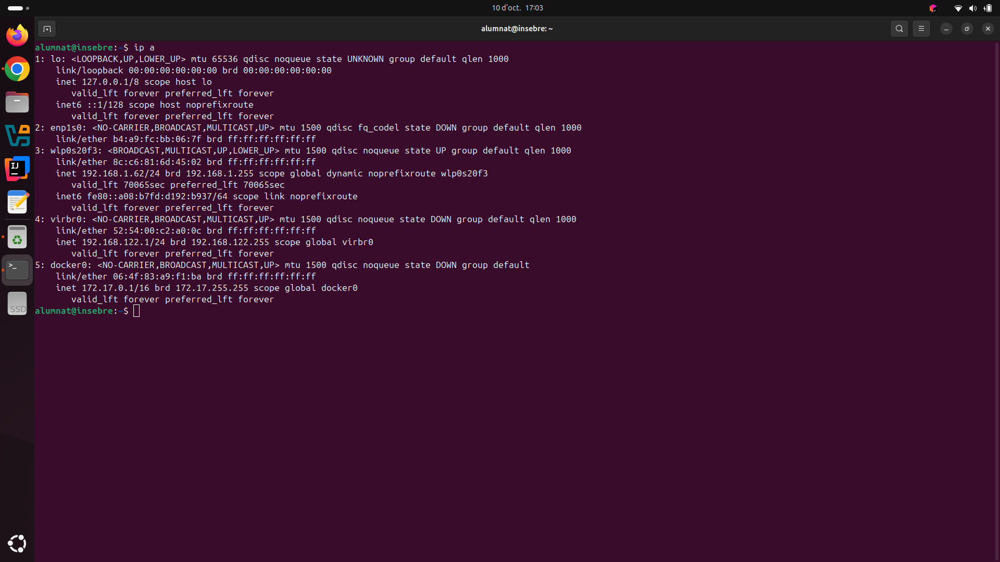
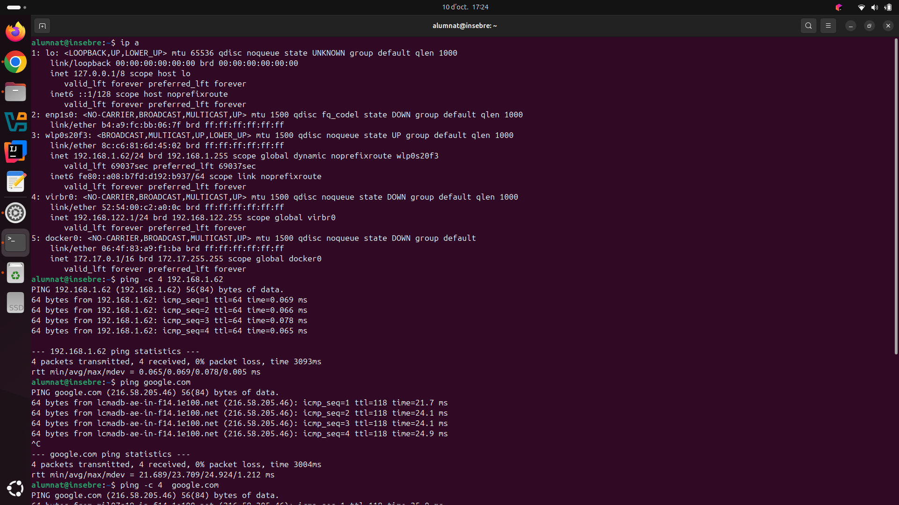
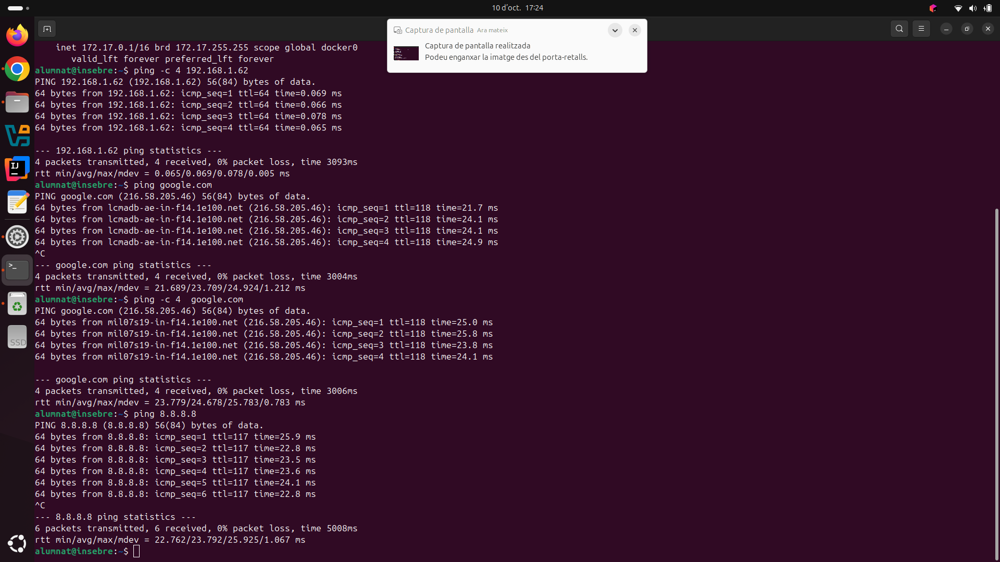
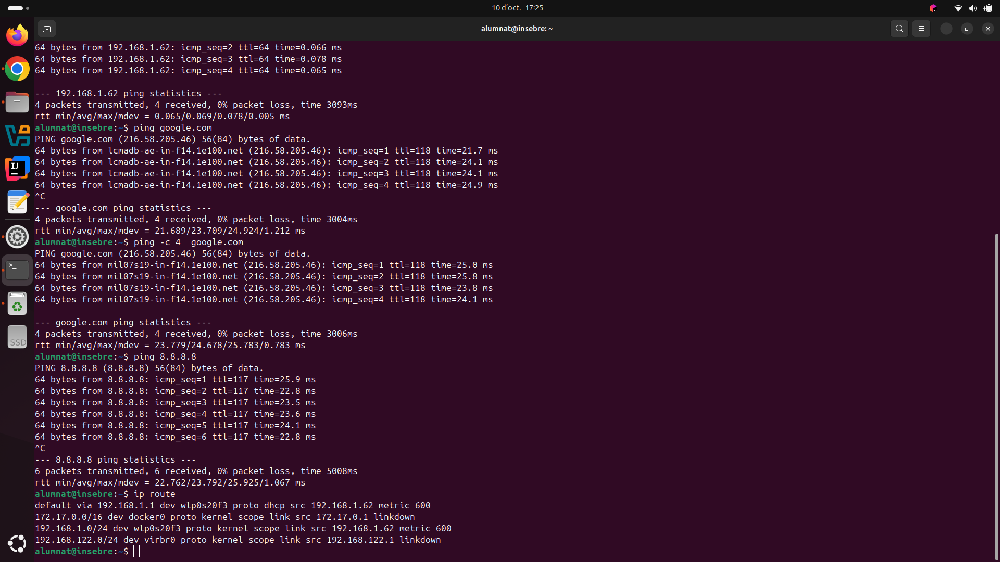
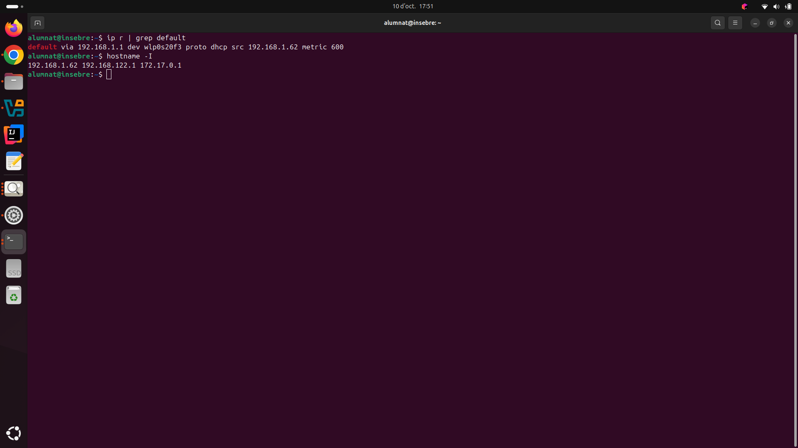
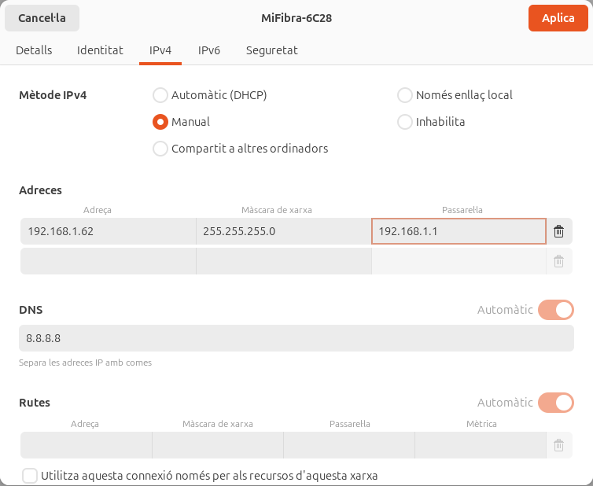

1. Virtualització
1.1 Per crear una màquina virtual que permeti utilitzar un sistema operatiu sense haver d'instal·lar-lo directament a l'ordinador, primer hem d'obrir el programa VirtualBox. Després, hem de prémer el botó «Nova» per començar a crear la màquina virtual.

1.2 En aquest apartat he decidit que la meva màquina virtual s'anomenarà SistemesInformaticsUbu26, he polsat l'apartat de la ISO i he seleccionat la ISO d'Ubuntu 26.04.1.

1.3 He decidit que la meva màquina virtual tingui 7,9 GB i 2 de CPU perquè funcioni de manera fluida.

1.4 Per acabar de crear la màquina virtual hem de pulsar el botó de finalitzar.

↑ Tornar a l'índex
2. Instal·lació SO
2.1 En acabar d'instal·lar Ubuntu a la màquina virtual, ens sortirà esta pestanya de benvinguda i hem de clicar a la part de Següent per a configurar-lo.

2.2 En esta pestaña hem de seleccionar skip for now i clicar el boto que posar omet.

2.3 En la tercera imatge hem de seleccionar els dos botons el share system with the Ubuntu team i el share error reportthe Ubuntu team.

2.4 Jo he selecionat els colors que ja estavan prederminats y he clicat el boto que posar següent.

2.5 Ja hem acabat de configurar Ubuntu i només ens falta clicar el boto següent per poder utilitzarlo.

2.6 Com que ja hem acabat de configurar el ubuntu al ordinador ja podrem utilitzar-lo.

↑ Tornar a l'índex
3. Xarxa bàsica
3.1 En aquesta imatge s'executa l'ordre ip a, que serveix per llistar i mostrar la configuració de totes les targetes i interfícies de xarxa de l'equip. El resultat ens permet veure que la connexió Wi-Fi (l'apartat anomenat wlp0s20f3) està activa i té assignada correctament l'adreça IP local 192.168.1.62 dins de la xarxa.

3.2 Aquí es fan servir ordres ping per comprovar si l'ordinador es pot comunicar correctament. Primer s'envien 4 paquets de dades a la pròpia adreça IP de l'equip per confirmar que la targeta de xarxa funciona bé internament (amb un 0% de pèrdua), i tot seguit es comença a comprovar la connexió exterior fent ping a la pàgina de Google.

3.3 Aquesta captura mostra la comprovació final de la connexió a internet enviant paquets d'informació tant al domini de google.com com a una IP pública numèrica (8.8.8.8). Com que tots dos processos acaben amb èxit i reben resposta, es demostra que l'ordinador navega per internet perfectament i que el sistema entén i tradueix bé les adreces web.

3.4 A l'última imatge s'utilitza l'ordre ip route per consultar la taula d'encaminament, que són les rutes que segueix l'ordinador per enviar informació a altres xarxes. El resultat més important és la primera línia (la ruta per defecte), que ens revela que la passarel·la o router té l'adreça IP 192.168.1.1, i és per on surten totes les dades cap a internet.

3.5 En aquesta captura s'executen dues ordres de terminal molt directes per obtenir informació ràpida de la xarxa. La primera ordre, ip r | grep default, s'utilitza per filtrar les rutes i mostrar exclusivament la línia que indica quina és la passarel·la o router principal de sortida (la 192.168.1.1). La segona ordre, hostname -I, és una drecera molt pràctica que llista únicament les adreces IP locals que té assignades l'ordinador en aquell moment, mostrant de forma neta i sense detalls extra la teva IP principal 192.168.1.62.

3.6 A la imatge s'observa l'entorn gràfic de configuració de xarxa del sistema operatiu, on s'estan definint els paràmetres de connexió de manera manual en lloc de fer-ho automàticament. Aquí es pot veure com s'ha establert una adreça IP fixa (192.168.1.62), la màscara de xarxa (255.255.255.0), la passarel·la per connectar-se al router (192.168.1.1) i el servidor DNS de Google (8.8.8.8), permetent controlar exactament quina configuració tindrà l'equip sense usar la terminal.

↑ Tornar a l'índex
5. Instal·lacions aplicacions
Et harum quidem rerum facilis est et expedita distinctio. Nam libero tempore, cum soluta nobis est eligendi optio cumque nihil impedit. Abans de donar per acabat el sprint, revisa aquest resum de les aplicacions instal·lades i que funcionen correctament.
↑ Tornar a l'índex